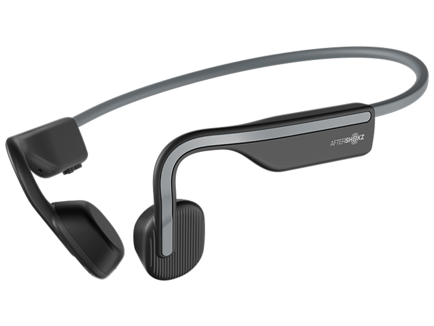
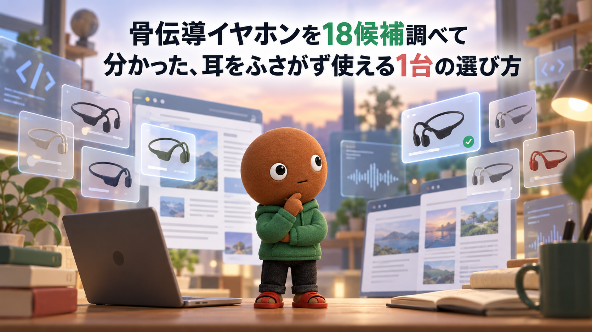
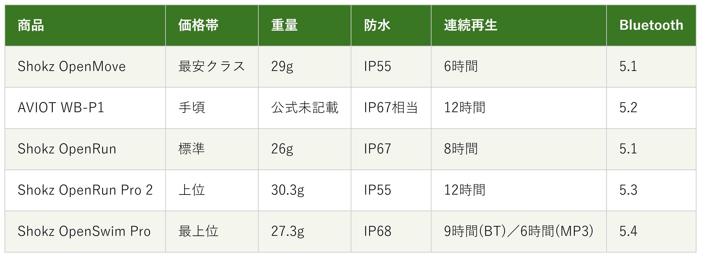

Amazonで見るランニング中にイヤホンで耳をふさぐのがなんだか不安な人へ
その音、
ちゃんと聞こえてる？
ランニング・自転車向けの骨伝導イヤホン18候補を調査。防水性能・連続再生時間から、選び方の違う5商品を比較しました。
自分に合う骨伝導イヤホンを探す
この記事はAmazonアソシエイト・プログラムの参加者として、紹介料を得る場合があります（PR）。仕様は調査時点の情報です。
18候補から、選び方の違う5商品に絞りました。まずは気になる1台へ。向いている人・向いていない人と、低評価レビューもまとめています。
18候補を調査
5商品に厳選
低評価レビューも確認済み
結論から先に言うと：
あなたの使い方に合う、1台を。
横にスワイプして、5商品を見比べる
選び方の基準は2つ
調べてわかったのは、基準はシンプルでした。
1つ目は「防水性能」。IP55の防滴仕様とIP68の水中対応では、汗や雨への安心感はもちろん、水泳に使えるかどうかまでまったく違います。
2つ目は「連続再生時間」。6時間で足りる人もいれば、12時間ないと物足りない人もいます。
価格帯には、かなり幅がありました。
比較表

価格帯・重量・防水・連続再生時間・Bluetoothの比較（価格帯は最安クラス〜最上位の5段階）
Shokz OpenMove
- 最安クラス
- 重量：29g
- 防水：IP55
- 連続再生：6時間
- Bluetooth：5.1
AVIOT WB-P1
- 手頃
- 重量：公式未記載
- 防水：IP67相当
- 連続再生：12時間
- Bluetooth：5.2
Shokz OpenRun
- 標準
- 重量：26g
- 防水：IP67
- 連続再生：8時間
- Bluetooth：5.1
Shokz OpenRun Pro 2
- 上位
- 重量：30.3g
- 防水：IP55
- 連続再生：12時間
- Bluetooth：5.3
Shokz OpenSwim Pro
- 最上位
- 重量：27.3g
- 防水：IP68
- 連続再生：9時間(Bluetooth)／6時間(MP3内蔵32GB)
- Bluetooth：5.4
向いてる人
- 初めて骨伝導イヤホンを試したい人
- 在宅ワークの合間に気軽に使いたい人
向いてない人
- 長時間の連続再生を重視したい人
選ぶ決め手とにかく安さを重視するなら、この1台です。
低評価レビューも見ました
音量を上げると音漏れが発生し、カナル型と違って音がオープンに広がるため、静かな場所では目立つという指摘があります。ただし音量を上げすぎなければ気にならないという声もありました。
参考：価格.com掲示板
ShokzのOpenMoveは、
まず1台、耳をふさがない
イヤホンを試したい人に最も向く1台です。
重さは29gで、耳をふさがず、
Bluetooth5.1でスマホとPCの
同時接続にも対応します。
防水はIP55、
連続再生は6時間です。
向いてる人
- 運動中のズレが気になる人
- 通話品質も重視したい人
向いてない人
- 大手ブランドの実績を最優先したい人
選ぶ決め手フィット感を重視するなら、この1台です。
低評価レビューも見ました
「1週間で壊れた」「1ヶ月でスピーカー不良」という故障報告があります。頭が小さめだとフィットが微妙という声や、屋外の環境音がある中では最大音量でも集中しづらいという指摘もありました。
参考：レビューブログ
AVIOTのWB-P1は、
運動中に耳からズレるのが
気になる人に最も向く1台です。
耳全体を包み込む
「モダンフィットデザイン」と、
チタンメモリー合金のフレームを採用しています。
通話用マイクはMEMSマイクを2つ搭載し、
ノイズキャンセリングにも対応します。
防水はIP67相当、連続再生は12時間です。
向いてる人
- ランニングや自転車で周囲の音に気づきたい人
向いてない人
- 水泳中も使いたい人
選ぶ決め手定番の安心感を重視するなら、この1台です。
低評価レビューも見ました
通常音量でも音漏れがあり、静かなオフィスや図書館では使いにくいという指摘があります。重低音を密閉型並みに楽しみたい人には不向き、専用アプリがイコライザー非対応という声もありました。
参考：マイベストレビュー
ShokzのOpenRunは、
骨伝導イヤホンの定番として
選んでおけば失敗しにくい1台です。
防水はIP67、重さは26g、
急速充電で10分の充電から
1.5時間使えます。
価格.comの満足度は4.16、
レビュー51件と実績も
5商品の中で最多です。
向いてる人
- 骨伝導でも低音まで楽しみたい人
- イコライザーで音を調整したい人
向いてない人
- 価格を最優先したい人
選ぶ決め手音質を重視するなら、この1台です。
低評価レビューも見ました
長時間使用だと少し耳が痛くなるという指摘や、静かな場所だと音漏れが気になるという声があります。前モデルの方が重低音が強かったとして、音質の変化を好まない声もありました。
参考：個人ブログレビュー
OpenRun Pro 2は、
骨伝導でも重低音を
楽しみたい人に最も向く1台です。
骨伝導ドライバーが中音域と高音域を、
空気伝導ドライバーが重低音を
分担する「DualPitch」構成です。
連続再生は5商品で最長の12時間、
EQモードでの音質調整にも対応します。
防水はIP55、重さは30.3gです。
向いてる人
- プールや海でも使いたい人
- 曲を内蔵させて持ち運びたい人
向いてない人
- 価格を抑えたい人
選ぶ決め手水泳対応を重視するなら、この1台です。
低評価レビューも見ました
「音質はやや物足りない」「少し平坦に聞こえる」という指摘があります。音量を上げると持続時間がさらに短くなるという報告や、MP3モードはシャッフル再生非対応という機能面の不満もありました。
参考：マイベストレビュー
ShokzのOpenSwim Proは、
水泳中も使いたい人に
最も向く1台です。
防水はIP68、水深2メートル・
2時間耐水の仕様で、5商品の中で
唯一水泳に対応します。
32GBの内蔵ストレージに曲を転送でき、
スマホを持たずに水中で
音楽を再生できます。
Bluetoothモードで9時間、
MP3モードでも
6時間使えます。
18候補をどう絞った？ 調査の経緯を見る
ランニング中に、イヤホンで耳をふさぐのがなんだか不安。そんな経験、ないですか。
車や自転車の音が聞こえなくなるのはやっぱり怖いです。長時間つけっぱなしだと、耳の中が蒸れたり痛くなったりもします。なので今回、私が耳をふさがない骨伝導イヤホンのスペックを調べ比較しました。
各商品ごとに、向いてる人・向いてない人も調べているので、自分に合った骨伝導イヤホンを探してみてください。
18候補から5つに絞り込みました
骨伝導イヤホンは、価格.comの骨伝導タイプ一覧だけでも10機種以上が並ぶジャンルです。今回は主要候補18件を調べ、価格帯・防水性能・再生時間が重複しないように5商品まで絞りました。
Shokz9機種・オーディオテクニカ2機種・AVIOT1機種・HACRAY1機種・Suunto5機種、という18候補です。
この中から、5つに絞りました。
ShokzのOpenRun Proは、後継のOpenRun Pro 2が骨伝導と空気伝導のデュアルドライバー構成に進化しているため見送りました。同じくOpenRun Mini・Pro 2 Miniは、頭が小さい人向けのサイズ違いのため、標準サイズを代表として採用しました。
ShokzのOpenSwim（無印）は、後継のOpenSwim Proの方が防水等級IP68・32GB内蔵と上位のため見送りました。
ShokzのOpenComm2は、Web会議用ブームマイク付きモデルとして「ヘッドセット」の記事ですでに紹介済みのため見送りました。
オーディオテクニカのATH-CC500BT／BT2は、耳の軟骨を振動させる「軟骨伝導」という骨伝導とは異なる方式のため見送りました。
HACRAYのOrcaは、価格帯・重量がAVIOTと近いものの、防水性能がIPX5とAVIOTのIP67相当より弱いため見送りました。
Suuntoの5機種は、価格が15,452円〜29,399円とスポーツウォッチブランドのプレミアム帯に寄っており、レビュー件数も1件以下と判断材料が薄いため見送りました。
低評価の3商品も見ました
上の18候補とは別に、サクラチェッカーが「要注意」と判定した商品を3つ調べました。
個別レビュー本文の真偽までは検証できないため、機械的に検出された事実だけを正直に書きます。
SUTOMOの骨伝導イヤホンは、レビュー件数1,738件とカテゴリ平均640件を大幅に上回っていました。「要注意メーカー」「本社所在国：推定中国」「公式サイト無し」という指摘も受けていました。
ブランド名不明の「2024年革新」をうたう商品は、サクラ度3の「要注意メーカー」判定で、レビュー496件のうち複数の注意喚起評価が検出されていました。
ノーブランドのオープンイヤーイヤホンは、レビュー件数わずか5件で、サクラ度5の最も高い警告レベルでした。
3商品とも「本社所在国：推定中国」「公式サイト無し」が共通していました。
調べてみて驚いたこと
18候補を調べる中で、骨伝導イヤホンの市場はShokzがほぼ独占していると実感しました。18候補のうち9機種がShokzで、他社はオーディオテクニカ・AVIOT・HACRAY・Suuntoのそれぞれ1〜5機種でした。
同じShokzでも、OpenRunとPro 2の間でドライバー構成が1つから2つに増えていて、世代ごとに設計そのものが変わっていると分かりました。
サクラチェッカーでは、「骨伝導イヤホン」と検索した際に出てくる無名ブランド品の中に、レビュー件数がカテゴリ平均の2倍を超えている商品もありました。レビューが多いから安心、とは限らないと実感しました。
迷ったらこれ
ここまで読んでもまだ迷ったら、防水性能IP67と実績の両方を備えたShokz OpenRunが、外しにくい1台としておすすめです。
Amazonで見る→よくある質問
Q. 骨伝導イヤホンは普通のイヤホンと何が違いますか。
A. 耳をふさがず、頬骨のあたりに振動を伝えて音を届ける仕組みで、周囲の音や声も同時に聞こえます。
Q. 音漏れは気になりますか。
A. 低音を上げすぎると空気の振動が増えて音漏れしやすくなるため、音量を上げすぎない・低音域を少し抑えるなどの工夫が有効です。
Q. ランニングや自転車で使っても危険はないですか。
A. 耳をふさがないため、車や自転車の接近音や周囲からの呼びかけに気づきやすく、屋外での運動用として設計されているモデルが多いです。
Q. 水泳でも使えますか。
A. 対応しているのはIP68等級かつ水中再生に対応したモデルだけです。IP55やIP67は生活防水・運動時の汗雨対応までで、水泳には使えません。
Q. Web会議用のヘッドセットと何が違いますか。
A. 今回の5商品は音楽・運動向けで、ブームマイクの無いモデル中心です。マイク性能を重視したWeb会議用途は、骨伝導タイプのヘッドセットを別記事で紹介しています。
こんな記事も書いてます
ミートボーの調査部屋で他の記事も見る（全48本）


出典
- 価格.com 骨伝導タイプのイヤホン・ヘッドホン一覧：kakaku.com
- マイベスト 骨伝導イヤホンのおすすめ人気ランキング：my-best.com
- Shokz公式 OpenMove製品ページ：jp.shokz.com
- Shokz公式 OpenRun製品ページ：jp.shokz.com
- Shokz公式 OpenRun Pro 2製品ページ：jp.shokz.com
- Shokz公式 OpenSwim Pro製品ページ：jp.shokz.com
- AVIOT公式 WB-P1製品ページ：aviot.jp
- サクラチェッカー SUTOMO 骨伝導イヤホン：sakura-checker.jp
- サクラチェッカー 2024年革新 骨伝導イヤホン：sakura-checker.jp
- サクラチェッカー オープンイヤーイヤホン：sakura-checker.jp